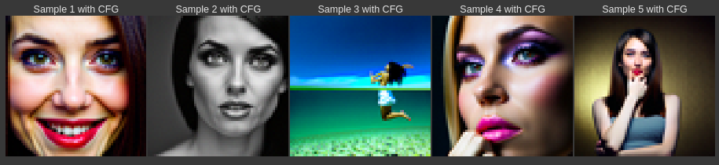
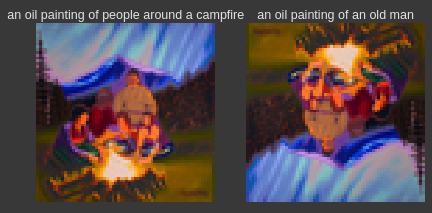

This project explores diffusion models, their application, and their implementation.
For this part, we import the DeepFloyd diffusion model from Hugging Face. Since computing text embeddings required a very large encoder network and hardware available is limited, we will use precomputed embeddings for this project.
We generate 2 images for each of our three prompts. We generate
images for the same prompt with three different values for
num_inference_steps
num_inference_steps=5
num_inference_steps=50
With 5 steps, the model correctly draws a snowy mountain village, and a man wearingf a hat, but both drawings lack detail. THey almost look like pointilism. The generated drawing of a rocket ship contains a sky you might see a rocket ship drawn onto, but there is no actual rocket ship.
With 50 steps, all three prompts are correctly drawn and have much higher detail and quality than the images generated with 5 steps. The snowy mountain village looks like a snowy mountain village, but it does not look realistic as an oil painting–it looks a bit artificial. The man wearing the hat looks almost photorealistic, but also looks like a sharpening filter was applied. The rocket ship looks like a cartoon drawing of a rocket ship.
I used random seed 180 throughout this project.
For some image where we have iteratively added noise over T timesteps, diffusion models work by predicting the noise added to this image given the timestep.
To begin our exploration of diffusion models, we first implement the forward process that takes an input image and applies noise over t timesteps.
This operation is given by equation:
are
the noise coefficients defined by the DeepFloyd developers, and
is sampled from a
normal distribution with mean 0 and standard deviation 1.
We therefore implement forward(im, t) that takes an
image and applies noise given timestep t. Applying to a picture of the
Campanile, we get:
One method of denoising that existed before neural networks is gaussian blur filtering. The logic here is that adding noise mostly introduces high freqency components to the image, so taking a low pass filter of the image can remove some of that noise. The biggest problem with this, is that you also lose the high frequencies from the original image. Therefore, while in some cases noise can be removed to an extent, the image is greatly degraded as a result.
We apply to our noisy images of the campanile with kernel size 5 for our filter:
The first stage of the model is a denoiser. It outputs an estimate of noise given an image and timestep. Solving the forward model for the denoised image, we can apply this noise estimate to denoise our images of the campanile in one step:
Doing so, we get the following results:
These results are much cleaner than the classical denoising results, but the final images still lack definition.
By removing noise partially by time step instead of all at once, we can acheive better performance. Instead of just estimating the original image (timestep 0), we estimate we estimate the image at timestep t’ given original timestep t. We compute each new estimate according to the following equation:
is the image at timestep t.
is the image
at timestep
which is less than t.
.
.
is our current one step denoising
estimate of the original image.
In practive, we start with timestep t and each step we reduce t by 30 until we reach 0. Through iterative denoising, we get the following results:
As we can see, iterative denoise provides by far the best quality result. While there was not enough data to accurately recreate the campanile, the iterative process created something photorealistic and plausible.
If we feed this denoising model a noisy image, it does a fairly good job at reconstructing a plausible image. However, as we start to add more noise, the model has to make up more and more of the information it is reconstructing. It therefore follows that if we apply to model to pure noise, it will just create images out of nothing.
Doing this, we get the following results:
These results feel like they are photorealistic, but if you closely examine any specific part of the image, you realize the contexts do not make sense.
To improve quality, we implement Classifier Free Guidance (CFG). At
each step CFG computes two noise estimates, one conditioned on some
prompt, and one unconditioned. The noise estimate we apply at each step
comes from a linear combination of the two estimates. If and
are the
conditioned and unconditioned noise estimates respectively, the compound
noise estimate is given by:
For this project, we use
Sampling the diffusion model as in part 1.5, but now with CFG, we get the following images:

These results are now much more self consistent and photorealistic.
Depending on how much noise we apply to a real image, the model will “hallucinate” a different amount of content to fill in the blanks. We can therefore create a sequence of images from high noise to minimal noise where each bears closer resemblence to the original image.
We get the following sequences:
For each sequence, we see progressively closer resemblance to the original image.
We apply this same process to one image from the web, and two hand drawn images:
Web:
The last two objects are similar robots, and the third to last has a similar overall shape.
Hand Drawn:
The last image in the sequence makes the image of cake more hand like and the one before shows a realistic hand in a similar pose.
The last image in the sequence is not much different from the original, but the one before shows a woman sitting on a table where the table legs form a similar shape to the rocket fins.
We can use the same sort of behaviour to inpaint an image. We do this by replacing pixels in a mask we are trying to inpaint with random noise, then running a diffusion denoising loop. At every step, we enforce that pixels outside of the inpainting region are set to be the same as the original image with an appropriate amount of added noise for the timestep. Everything in the inpainting region is left alone.
We apply to three images (The campanile and two others):
The model adds a newe building to the base of the campanile. It adds flowers as a garnish to the coffee, and it adds a flower into the mug.
We can also apply image to image translation with SDEdit as we have done before, but this time include text prompts to guide the content.
We produce the following sequences:
The first sequence uses the prompt “a pencil,” the second uses “an oil painting of an old man,” and the last uses “an oil painting of a snowy mountain.” In all three we transition from an image of the prompt to the image we supplied.
In the first sequence we go from a girl holding a pencil, to a pencil, to a pencil like tower, to the campanile. In the second, we go from oil paintings of old men, to oil paintings of old men on canvases resembling the coffee, to an image of coffee. In the last sequence, we produce three images of snowy mountain villages, then an image of a snowy mountain house in front of a background in the shape of a cup, then we transition to images of cups with snowy mountain features patterned on the sides.
With the Visual Anagrams algorithm, we can use the UNet diffusion model to create images that look like like one prompt right side up and another prompt upside down. To do this, at each step we create two noise estimates: one for the first prompt and the right side image and the other for the second prompt and the flipped image. We create and apply them as follows:
UNet is the diffusion model, flip rotates the image 180 degrees, and
and
are our prompt embeddings.
We get the following results:

In a somewhat similar process to the visual anagrams, we can create hybrid images that look like one thing up close and something else from far away. Like visual anagrams we create two noise estimates with two different prompt, but both noise estimates use the same image. We then combine the two noise estimates by highpassing one and lowpassing the other and then taking the sum. The algorithm works as follows:
Up close this looks like “a lithograph of waterfalls” but far away looks like “a lithograph of a skull.”
Up close this looks like “an oil painting of a snowy mountain village” but far away looks like “a lithograph of a skull.”
Up close this looks like “a lithograph of waterfalls” but far away looks like “an oil painting of an old man.”
In this part we train our own diffusion model.
To start we train a UNet model to predict a clean image given a noisy image
. We train directly on clean image noisy
image pairs and use a mean squared error loss function.
We implement the following architecture for our UNet (diagram from project description):

The model downsamples the original image 3 times, and then upsamples to the original dimensions. To compensate for the information that is lost by doing this, the downsampled output at each layer is concatenated with the upsampled output before further processing.
As explained in the part 1 header, we aim train a UNet model to
predict a clean image given a noisy image
. We train directly on clean image noisy
image pairs and use a mean squared error loss function. More
specifically we define loss as:
is our
denoiser.
Also to formalize a bit, we define a noise image given our clean image
as follows:
Where sigma is our noise standard deviation, and epsilon is noise sampled from a normal distribution with mean 0 and standard deviation 1.
We visualize the noising process as follows:
We use 5 epochs, batch size 256, learning rate 1e-4, hidden dimension
size D=128, and noise standard deviation 0.5.
We now train our model and produce the following training loss curve:
We also produce the the following results after 1 and 5 epochs:
After 1 epoch:
After 5 epochs:
We can see that by the fist epoch, the denoised images the model produces resemble the inputs, but have some artifacting and inaccuracies. By the fifth epoch, we get much better results without such artifacting present.
Our denoising model was trained for one specific noise level. We test our model on other noise levels to see how it performs:
For noise levels under 0.6 the model performs relatively well, but by
the time , the denoised
digits produced are still recognizable but have much more artifacting
and are much less plausibly part of the mnist dataset.
We now implement and train a diffusion model. While in part 1, we trained a model to directly predict a denoised image given a noisy image, we now predict the noise added itself. We still use a mean square error loss function.
Given our model ,
original image
, noise added
(sampled from
standard normal distribution), and noisy image
such that
, we define loss as follows:
As in part A of the project, we consider noise as applied stepwise.
We generate noisy image given timestep
:
For this part of the project we use and generate list
${} with the following procedure:
If we train the UNet to predict noise given a noisy image and timestep instead of just the noisy image, we can implement stepwise denoising as in part A of the project. To inject timestep t into the model, we simply process it with two fully connected blocks and add the outputs to the layer 1 unflatten output and the layer 2 upsampling output respectively. This diagram from the project description shows this graphically:

We train the UNet Diffusion model in the same way we trained the UNet denoising model, but using our new definitions of loss, outputs, and inputs.
We use batch size 128, hidden dimension size D=64, 20
epochs, and learning rate 1e-3 with an exponential learning rate
scheduler.
We produce the following training loss plot:
Sampling from the UNet with iterative denoising (with the same algorithm as in part A), we generate the following images:
At epoch 5:
At epoch 20:
The results from epoch 5 resemble the dataset from afar, but upon closer inpection many sampled outputs are not recognizable as digits. By epoch 20, almost every output is recognizable.
Similarly to how we can supply timestep as an input to condition our UNet diffusion model, we can also supply the class of the noisy input while training. This way we can improve performance, and also denoise images given a class. This also lets us generate images of a certain class.
To fit this into our model we add two more fully connected block layers to process one hot encoded vectors of the class of the input (0-9). To condition a layer with the output of these blocks, we simply multiply the layer by the output.
The training follows similarly to the previous part, but we also supply the model with one hot encoded class as an input. To allow the model to function without class conditioning, we replace the class vector with zeros randomly with probability 0.1.
We produce the following training loss plot:
Sampling from the UNet with iterative denoising (with the same algorithm as in part A), we generate the following images. Each column is conditioned with a specific digit as the class.
At epoch 5:
At epoch 20:
By epoch 5 we get fairly good results but a few of the 8s and one 9 are questionably recognizable. By the 20th epoch, the results are clearer and of better quality.